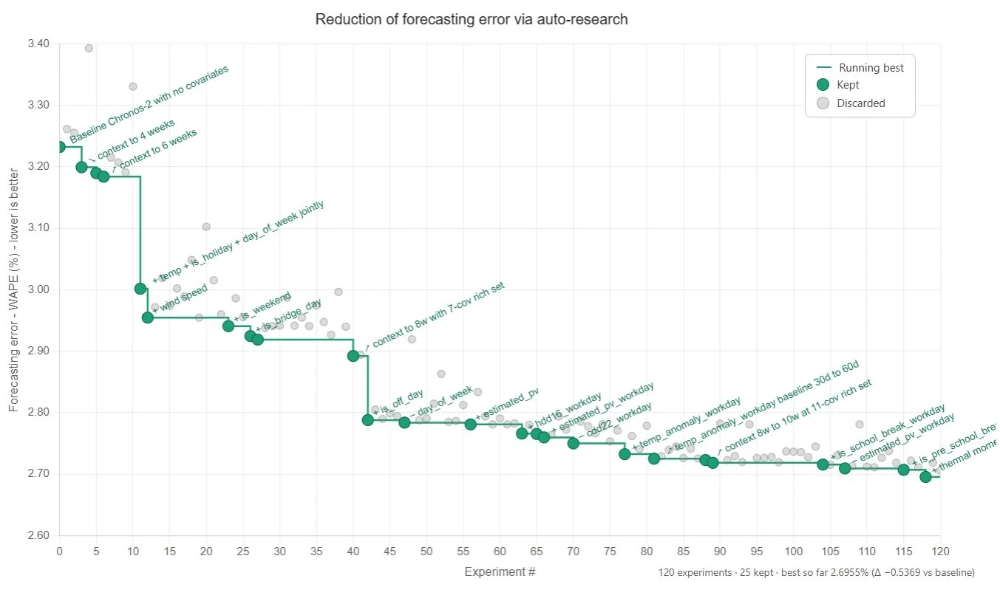

written by Roni Kobrosly on 2026-07-10 | tags: agentic ai engineering open source machine learning statistics
RigorLoop fully open source and is published on GitHub here and ready to install via PyPi.
Earlier this year, a couple of heavy-hitters in the AI field simultaneously claimed that they no longer simply prompt agents, they simply build agentic loops to achieve their goals. Now, everyone is talking about loops. When we say "loops" we mean agents calling themselves over and over and refine their own output. For a stretch there, every other demo in my LinkedIn feed was some flavor of a model sitting in a while loop, grinding away at a problem until some number goes up.
I get the appeal. It's a genuinely powerful pattern, and there's something a little magical about watching an agent iterate its way from garbage to a working solution while you go refill your coffee.
But I'm a statistics/AI/ML/data person (damn I need a clean single word for what I do), and something about the whole genre kept nagging at me. It took me a while to name it, so let me just say it:
Lots of this "loop crafting" is doing it profoundly wrong. Take the following example of an "auto-research" loop that someone carried out. I redacted their name and LinkedIn information from the image, since I'm going to be a little bit hard on this.

What's happening here? The author looks to be optimizing some time-series forecast. They have their time-series model embedded in some kind of agent-loop harness, and are grinding out lots of candidate models to identify the model that performs the best on a dataset. Across the loops they tweak, add, and remove features, tweaks some more, etc. At the end, until the best-performing forecaster gives a great-looking score. The loop engineer stands up and accepts the applause from the crowd. The judges hold up their score cards and the audience roars again.
Hold up. If you've done any real modeling work, piercing sirens should be going off in your head. That's not "evaluation". That's overfitting with extra steps. 🙃 The agent is being optimized directly against the very examples you're using to grade it, which means the final number is measuring "how well did we memorize this particular pile of examples," not "will this thing work on a universe of inputs it hasn't seen." It's the oldest mistake in the data science book, dressed up in a very 2026 VC-funded outfit.
Almost nobody talking about these loops was measuring them like a data scientist would.
The other thing that bugged me: these loops treat any improvement in the score as progress. It went from 0.783 to 0.778? Ship it, we improved! But with a small eval set, a change in the WAPE of 0.783 to 0.778 is very often just noise. A careful analyst would ask whether that difference is even real before celebrating it. The loops I was seeing never asked.
So I built the thing I wished existed. It's called RigorLoop.
RigorLoop is a statistically-sound agentic loop-engineering framework. You hand it three things:
Then it runs agentic loops: a strategy agent directing a team of concurrent executor agents that iteratively build and refine a solution to your task. So far this might sound similar. The difference is entirely in how it decides whether it's actually getting better, and in what it hands you at the end.
Because here's the nice part: the thing RigorLoop produces isn't locked inside RigorLoop. It's a portable artifact you can walk away with and use anywhere. Either:
The loop is the factory. You get to keep the product.
This is the part I actually care about, so bear with me. Everything RigorLoop does to earn the word "rigor" comes down to treating your examples the way a disciplined data scientist treats a dataset:
It splits your data, once, up front. Your examples get partitioned into dev / validation / test. The same holy trinity you'd use to train and honestly evaluate any model. The split is seeded and fingerprinted, so a resumed run can't quietly reshuffle it on you and launder test examples into training.
The building agents only ever see the dev set. The executor agents writing your solution never lay eyes on validation or test examples. Not once. Validation results reach the strategy agent only as aggregate numbers, never as raw examples to memorize. And the test set? No agent sees it, ever. This is the firewall that the naive loops simply don't have.
"Improved" has to mean beyond the noise. RigorLoop doesn't chase a higher number for its own sake. When it compares solutions, it uses paired statistical tests and only counts an improvement if it clears the noise band. So the loop stops chasing luck; a 0.81 → 0.83 that's within the margin of error gets treated as the coin-flip it probably is.
It's stingy about peeking. Validation isn't free to look at infinitely; there's a budget of counted "peeks," because every time you check your holdout and react to it, you leak a little information into your process. RigorLoop treats that leakage as a real cost and rations it.
The test set is evaluated exactly once. At the very end, the winning solution touches the test set a single time, and that's the number you report; complete with a 95% confidence interval, per-check breakdowns, and honest caveats about what a set that size can and can't actually prove. (With ~30 examples, a validation set of six can only distinguish pass-rate differences of roughly ±40 points, and RigorLoop will tell you that to your face instead of handing you a falsely precise 0.833.)
That last discipline comes with a warning I put right in the README, because it's the trap even I would fall into: the test set is only honest once. If you peek at the test score, tweak your task description, and re-run on the same examples, your pristine holdout has quietly become a second validation set, and the number starts lying to you. There's no clever engineering that saves you from this. You just have to bring fresh examples for the next run's holdout
Briefly, the shape of a run:
rigorloop init # scaffolds a config, a task file, and a toy dataset
rigorloop check # validates everything and estimates the agent-call budget (spends zero tokens)
rigorloop run # runs the loops; the artifact lands in runs/<id>/final/
rigorloop check is there because these loops spend real model calls, and I didn't want anyone lighting money on fire by surprise: it tells you roughly what a run will cost before you commit to it. When the run finishes, you get your solution, a report.md with the confidence intervals and the loop history and the caveats, and a machine-readable version of the same. Crash halfway through? rigorloop run --resume picks it back up on the exact same split.
I'll be honest about the boundaries, because the machinery only pays off in a specific situation. RigorLoop is for data-science-flavored transformation tasks: you've got lots of representative messy inputs and the structured outputs you want, and you need something that generalizes to new inputs (extraction, normalization, classification-with-a-format, tagging, reformatting). That's where overfitting is a live threat and all the splits-and-significance-tests apparatus earns its keep.
If you just need a deterministic little script to pass a handful of fixed unit tests, don't use this. A single coding-agent session will do that better, and all my dev/validation/test ceremony is pure overhead.
I don't think the interesting part of a loop was ever the loop. The loop is easy, it's a while and a counter and some optimism. The hard part, the part that separates a demo from something you'd actually stake a decision on, is knowing whether the thing genuinely got better or just got luckier. That's not an engineering question, it's a statistics question, and it's exactly the question the current wave of loop-hype mostly hand waves away.